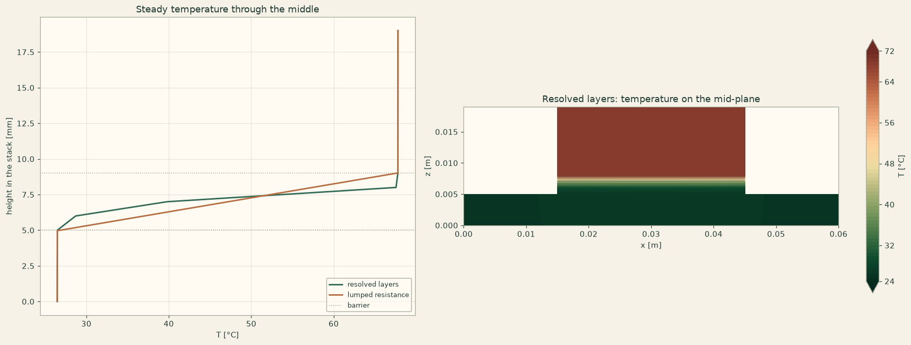
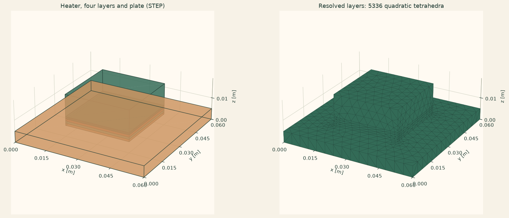

Docs › Examples › Composite thermal barrier: resolved layers and a lumped resistance
Heat transfer · 3D
Composite thermal barrier: resolved layers and a lumped resistance
A copper heater on a barrier of four thin insulating layers over a cooled aluminium plate, modelled once with the layers meshed and once with the layers replaced by a lumped thermal resistance.
Run locally with OneSimulation. The example downloads are free. Running them requires an activated runtime. Runtime Alpha 0.2.1a7 · CPython 3.13 on macOS (Apple Silicon), Ubuntu 22.04 (x86-64), and Windows x64. Installation and activation · View pilot plans. Scope of the reference checks.

What it computes
OneSimulation reads the stack and the layer regions from STEP files and solves the steady 3D heat conduction with quadratic tetrahedra and layer-wise properties; in the second model an assembly of heater and plate carries a ThermalContact of conductance 1/sum(d/k) on their common face, so the thin layers need no mesh. The script that builds the STEP files comes with the notebook.
What it checks
Both models give the heater top at 67.799 °C and a step of 41.30 K across the barrier, against 41.33 K from the 1D series resistance P R''/A; the heater temperatures of the two models agree to better than 1e-3 K, and both pass the full 1.00000 W to the cooling air.
Geometry
The notebook starts at the import of the CAD files composite_thermal_barrier_lumped.step, composite_thermal_barrier_lumped_ceramic_paper.step, composite_thermal_barrier_lumped_glass_fibre.step, composite_thermal_barrier_lumped_graphite_foil.step, composite_thermal_barrier_lumped_heater.step, composite_thermal_barrier_lumped_heater_on_plate.step, composite_thermal_barrier_lumped_mica.step, composite_thermal_barrier_lumped_plate.step: STEP (AP242), readable by any CAD program, with the names of the faces that the boundary conditions use. Put them next to the notebook.

The geometry script
The script composite_thermal_barrier_lumped_geometry.py builds the geometry with the CAD objects of OneSimulation and writes the files. Change a dimension there, run it, and run the notebook again.
"""Geometry of the OneSimulation example "Composite thermal barrier: resolved layers and lumped resistors".
Builds with the CAD objects of OneSimulation a copper heater block (30 mm x 30 mm, 10 mm thick) on a
composite barrier of four layers, each 1 mm thick and of the heater's footprint, on an aluminium
base plate (60 mm x 60 mm, 5 mm thick) that is cooled from below.
Files: composite_thermal_barrier_lumped.step holds the whole stack as one solid with the face
group bottom (the cooled face); composite_thermal_barrier_lumped_<name>.step
hold the regions of the heater and of the four layers (mica, ceramic_paper, glass_fibre,
graphite_foil, from the plate upwards). For the lumped model, composite_thermal_barrier_lumped_plate.step
and composite_thermal_barrier_lumped_heater_on_plate.step hold the plate and the heater placed
directly on it, the barrier being replaced by a thermal resistance between them.
"""
from onesim.cad.d3 import Box
plate_side, plate, side, layer, heater = 0.06, 0.005, 0.03, 0.001, 0.010
corner = (plate_side - side) / 2
base = Box(length=plate_side, width=plate_side, height=plate)
stack = base | Box(
length=side, width=side, height=4 * layer + heater, origin=(corner, corner, plate)
)
faces = stack.boundaries
stack.grouped(bottom=faces.z_min).save("composite_thermal_barrier_lumped.step")
for index, name in enumerate(("mica", "ceramic_paper", "glass_fibre", "graphite_foil")):
Box(
length=side,
width=side,
height=layer,
origin=(corner, corner, plate + index * layer),
).save(f"composite_thermal_barrier_lumped_{name}.step")
Box(
length=side, width=side, height=heater, origin=(corner, corner, plate + 4 * layer)
).save("composite_thermal_barrier_lumped_heater.step")
base.grouped(bottom=base.boundaries.z_min).save(
"composite_thermal_barrier_lumped_plate.step"
)
Box(length=side, width=side, height=heater, origin=(corner, corner, plate)).save(
"composite_thermal_barrier_lumped_heater_on_plate.step"
)The notebook
The complete notebook, cell by cell. Run it to produce the figures and the comparison printout.
Thin insulating layers are stacked to protect a part from a heat source or to set the thermal resistance between them. A copper heater (30 mm × 30 mm, 10 mm thick) releasing 1 W rests on a barrier of four layers of its footprint, each 1 mm thick, which lies on an aluminium plate (60 mm × 60 mm, 5 mm thick) cooled from below. Meshing such layers costs elements through their thickness; a common shortcut replaces them by a lumped thermal resistance between the faces they connect, the series resistance per area
| part | thickness [mm] | \(k\) [W/(m K)] | \(\rho c\) [MJ/(m³ K)] |
|---|---|---|---|
| copper heater | 10 | 400 | 3.43 |
| graphite foil | 1 | 5 | 0.71 |
| glass-fibre mat | 1 | 0.04 | 0.084 |
| ceramic paper | 1 | 0.10 | 0.25 |
| mica sheet | 1 | 0.5 | 2.46 |
| aluminium plate | 5 | 200 | 2.43 |
| face | condition |
|---|---|
| bottom of the plate | forced air, \(h=200\) W/(m² K), 25 °C |
| all other faces | insulated |
The resolved stack comes from composite_thermal_barrier_lumped.step with one region file per layer and for the heater; for the lumped model, composite_thermal_barrier_lumped_plate.step and composite_thermal_barrier_lumped_heater_on_plate.step hold the plate and the heater placed directly on it. The script composite_thermal_barrier_lumped_geometry.py writes all of them with the CAD objects of OneSimulation. In the lumped model the faces between heater and plate carry a ThermalContact of conductance \(1/R''\): the temperature jumps across them by \(q''R''\).
Reference. The barrier is much less conductive than copper and aluminium, so the heat crosses it almost uniformly over the footprint \(A\), and the temperature step across the barrier is close to \(P\,R''/A\) (Incropera and DeWitt, Fundamentals of Heat and Mass Transfer, ch. 3.1). In the steady state all of the 1 W leaves through the cooled face. The resolved model is the reference for the lumped one.
import numpy as np
from onesim.cad.d2 import Plane
from onesim.cad.d3 import Assembly
from onesim.cad.exchange import load
from onesim.materials import IsotropicSolid
from onesim.meshing import TetrahedralMesher, interface
from onesim.numerics import Numerics
from onesim.numerics.fem import FiniteElement, Lagrange
from onesim.numerics.linear import SparseDirect
from onesim.physics.heat_transfer import (
ConvectiveHeatFlux,
HeatConduction,
HeatFlux,
ThermalContact,
)
from onesim.simulation import Problem, Simulation, regionwise
from onesim.visualization import plots, theme
theme.set()Geometry and mesh
The resolved stack is one solid with the layers and the heater embedded as regions; its mesh follows every interface. The lumped model is an assembly of plate and heater; its mesh keeps the two parts apart on their common face, where the contact acts.
stack = load("composite_thermal_barrier_lumped.step")
layers = {
"mica sheet": ("mica", 0.5, 2.46e6),
"ceramic paper": ("ceramic_paper", 0.10, 0.25e6),
"glass-fibre mat": ("glass_fibre", 0.04, 0.084e6),
"graphite foil": ("graphite_foil", 5.0, 0.71e6),
}
regions = {
name: load(f"composite_thermal_barrier_lumped_{file}.step")
for name, (file, _, _) in layers.items()
}
heater = load("composite_thermal_barrier_lumped_heater.step")
lumped = Assembly(
parts=(
load("composite_thermal_barrier_lumped_plate.step").named("plate"),
load("composite_thermal_barrier_lumped_heater_on_plate.step").named("heater"),
)
)
meshes = {
"resolved": TetrahedralMesher(
target_size=0.004, embedded_regions=(*regions.values(), heater)
).generate(stack),
"lumped": TetrahedralMesher(target_size=0.004).generate(lumped),
}
view = plots.Camera(elevation=25, azimuth=-60)
fig = plots.figure(1, 2, size=(15, 6))
plots.geometry(
[part.named(name) for name, part in (("heater", heater), *regions.items())]
+ [load("composite_thermal_barrier_lumped_plate.step").named("plate")],
labels=False,
camera=view,
title="Heater, four layers and plate (STEP)",
ax=fig[0],
)
plots.mesh(
meshes["resolved"],
groups=("all",),
legend=False,
camera=view,
title=f"Resolved layers: {meshes['resolved'].cell_count} quadratic tetrahedra",
ax=fig[1],
)
plots.show()Models
Conductivity, heat capacity and heating are given region by region; with the density set to one, the specific heat capacity is the volumetric one (it matters only for transients). Both models are solved for the steady state.
power, film, ambient = 1.0, 200.0, 298.15
area, heater_volume = (
heater.size[0] * heater.size[1],
heater.size[0] * heater.size[1] * heater.size[2],
)
resistance = sum(
r.size[2] / k for r, (_, k, _) in zip(regions.values(), layers.values())
)
solid = lambda k, c: IsotropicSolid(
density=1.0,
specific_heat_capacity=c,
thermal_conductivity=k,
youngs_modulus=7e10,
poisson_ratio=0.33,
thermal_expansion_coefficient=0.0,
)
resolved = HeatConduction(
domain=stack.volume,
material=solid(
regionwise(
((heater, 400.0), *((regions[n], k) for n, (_, k, _) in layers.items())),
default=200.0,
unit="W/m/K",
),
regionwise(
((heater, 3.43e6), *((regions[n], c) for n, (_, _, c) in layers.items())),
default=2.43e6,
unit="J/kg/K",
),
),
heating=regionwise(((heater, power / heater_volume),), default=0.0, unit="W/m^3"),
)
contact = HeatConduction(
domain=lumped.domain(),
material=solid(
regionwise({"heater": 400.0, "plate": 200.0}, unit="W/m/K"),
regionwise({"heater": 3.43e6, "plate": 2.43e6}, unit="J/kg/K"),
),
heating=regionwise({"heater": power / heater_volume, "plate": 0.0}, unit="W/m^3"),
)
problems = {
"resolved": Problem(
name="Resolved barrier",
geometry=stack,
physics=(resolved,),
boundary_conditions=(
ConvectiveHeatFlux(
boundary=stack.boundaries.bottom,
physics=resolved,
heat_transfer_coefficient=film,
ambient_temperature=ambient,
),
HeatFlux(
boundary=stack.boundaries.all - stack.boundaries.bottom,
physics=resolved,
value=0.0,
),
),
),
"lumped": Problem(
name="Lumped barrier",
geometry=lumped,
physics=(contact,),
boundary_conditions=(
ConvectiveHeatFlux(
boundary=lumped.boundaries["plate.bottom"],
physics=contact,
heat_transfer_coefficient=film,
ambient_temperature=ambient,
),
HeatFlux(
boundary=lumped.boundaries.all - lumped.boundaries["plate.bottom"],
physics=contact,
value=0.0,
),
ThermalContact(
boundary=interface(meshes["lumped"], "heater_plate"),
physics=contact,
conductance=1 / resistance,
),
),
),
}
models = {"resolved": resolved, "lumped": contact}
spatial = dict(
spatial=FiniteElement(element=Lagrange(order=2)), linear_solver=SparseDirect()
)
steady = {
name: Simulation(
problem=problem, mesh=meshes[name], numerics=Numerics(**spatial)
).solve_stationary()
for name, problem in problems.items()
}Results
Temperatures at the centre of the heater's top and of the plate's top beside the heater, the step across the barrier, and the heat into the air.
plate_top, heater_top = 0.005, stack.size[2]
middle = stack.size[0] / 2
probes = {
"resolved": [
[middle, middle, heater_top],
[middle, middle, plate_top + 4e-3],
[middle, middle, plate_top],
],
"lumped": [
[middle, middle, plate_top + heater.size[2]],
[middle, middle, plate_top + 1e-9],
[middle, middle, plate_top - 1e-9],
],
}
values = {
name: np.ravel(steady[name].field(models[name].temperature).evaluate(points))
for name, points in probes.items()
}
print(
f"series resistance of the layers R'' = {1e4 * resistance:.3f} cm² K/W; 1D estimate of the step across the barrier P R''/A = {power * resistance / area:.3f} K"
)
print(
"steady state heater top [°C] barrier top [°C] plate below the barrier [°C] step across the barrier [K] heat into the air [W]"
)
for name in values:
print(
f"{name:12s} {values[name][0] - 273.15:24.3f} {values[name][1] - 273.15:18.3f} {values[name][2] - 273.15:30.3f} {values[name][1] - values[name][2]:29.3f}"
f" {abs(steady[name].field(models[name].temperature).boundary_flux(problems[name].boundary_conditions[0].boundary)):23.5f}"
)
print(
f"lumped against resolved: heater top {values['lumped'][0] - values['resolved'][0]:+.1e} K "
f"({100 * (values['lumped'][0] - values['resolved'][0]) / (values['resolved'][0] - ambient):+.1e} % of the rise)"
)Figure
Left: the steady temperature on a vertical line through the middle of the stack, resolved and lumped (the heater of the lumped model is drawn above the barrier it replaces). Right: the steady temperature of the resolved stack on its vertical mid-plane.
z = np.linspace(0.0, heater_top, 400)
z_lumped = np.linspace(0.0, plate_top + heater.size[2], 300)
fig = plots.figure(1, 2, size=(16, 6))
plots.line(
y={
"resolved layers": (
steady["resolved"]
.field(resolved.temperature)
.evaluate(
np.column_stack((np.full_like(z, middle), np.full_like(z, middle), z))
)
.ravel()
- 273.15,
1e3 * z,
),
"lumped resistance": (
steady["lumped"]
.field(contact.temperature)
.evaluate(
np.column_stack(
(
np.full_like(z_lumped, middle),
np.full_like(z_lumped, middle),
z_lumped,
)
)
)
.ravel()
- 273.15,
1e3 * np.where(z_lumped > plate_top, z_lumped + 4e-3, z_lumped),
),
},
hlines={"barrier": 5.0, "": 9.0},
xlabel="T [°C]",
ylabel="height in the stack [mm]",
title="Steady temperature through the middle",
legend="lower right",
ax=fig[0],
)
plots.section(
steady["resolved"].field(resolved.temperature),
plane=Plane(origin=(0, middle, 0), normal=(0, 1, 0)),
component=lambda T, p: np.ravel(T) - 273.15,
limits=(25, 70),
contours=10,
subdivisions=2,
label="T [°C]",
title="Resolved layers: temperature on the mid-plane",
ax=fig[1],
)
plots.show()Going further
Give the barrier a larger footprint than the heater in composite_thermal_barrier_lumped_geometry.py: heat then spreads sideways in the graphite foil, which the lumped resistance cannot do, and the two models drift apart. Swapping two layers changes neither model in the steady state.